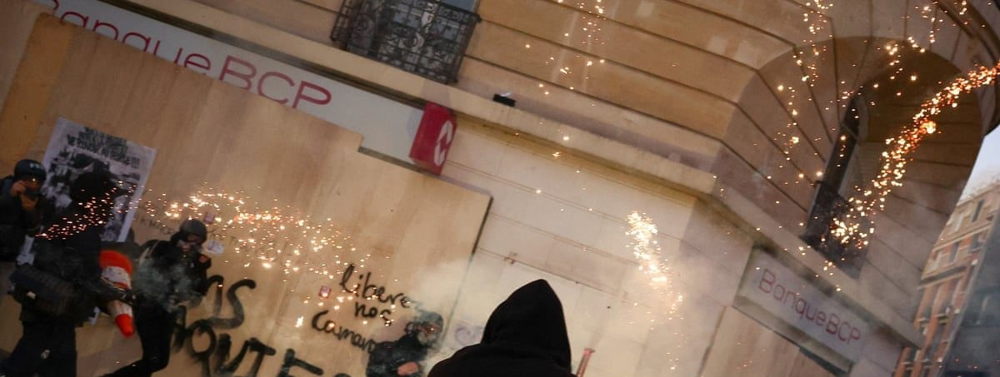

Ungdomsprotester breder sig i Europa: 320.000 på gaden i Frankrig og plyndringer i Frankfurt
For tredje weekend i træk demonstrerede hundredtusinder mod leveomkostninger og dårlig offentlig service, og nu er Tyskland og Italien også med.

Ifølge det franske indenrigsministerium deltog omkring 320.000 i cirka 150 demonstrationer lørdag, heraf 70.000 i Paris. Det er færre end de anslåede 410.000 weekenden før. Langt de fleste marcher var fredelige, men da de sluttede, kastede maskerede grupper brosten og brandbomber mod politiet i Paris, Lyon og Marseille, og 565 blev anholdt.
Bevægelsen samler skoleelever, fagforeninger og de gule veste i vrede over priser, ulighed og Macrons regering. I Tyskland gik Gen Z-protesterne ifølge Al Jazeera på gaden i over 30 byer, og i Frankfurt plyndrede uromagere butikker, mens politiet brugte tåregas. Reuters melder samtidig om masseprotester i Italien over løn og leveomkostninger.
Kilde: The Guardian · Læs mere →